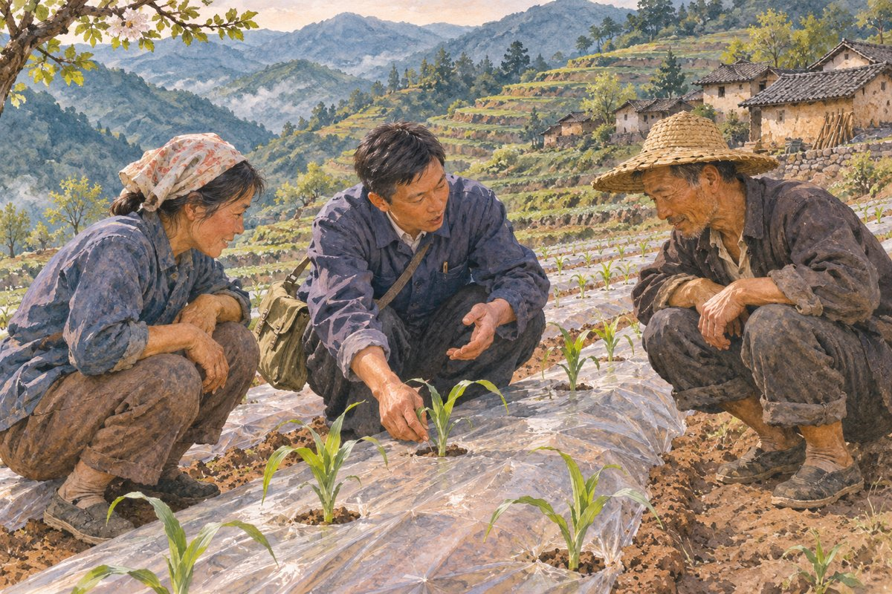

乡土前辈 · 封竹村 · 20 世纪 80 年代
封竹的前辈，为高山玉米试出一条路

高寒山区种粮，先要面对温度这道难题。2024 年《建始“出圈”记》援引《建始县志》，记述了上世纪八十年代封竹村的一次尝试：农业科技人员与当地农民一起，试种地膜覆盖保温播种玉米。
报道记载，这项尝试成功后，亩均单产由不足一百八十公斤提高到三百多公斤，随后向其他高寒山区推广。对当年的农户来说，技术的意义很具体，就是让一块土地多收一些粮。
今天再谈封竹的山水和乡村生活，也值得记住这些共同试验的人。他们未必每个人都在报道中留下了姓名，但农技人员与农民的合作，构成了这段地方记忆。
本篇纪念参与其中的前辈群体，不把集体成果归于一位尚未核实身份的人。县志的具体版本、页码及参与者名录，仍有待原页资料补充。
查看图文出处与说明
东南网 · 柳洁、董庆森《建始“出圈”记》 · 2024-07-16 ↗农技人员与农民试种玉米的场景想象 · AI 插画，非当年现场照片。